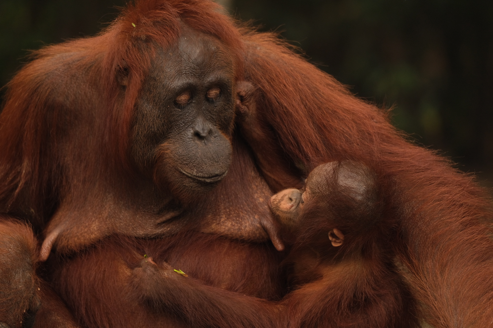

Arrival & river journey
Meet the local team, transfer to the harbour and board your klotok. Begin the river journey and settle into the rainforest surroundings.

Borneo Wild Capture · Expedition
More time to slow down in the rainforest, observe wildlife patiently and explore further at a pace shaped by the river and park conditions.
Enquire about this trip ↗Sample itinerary
This is a sample outline, not a fixed daily route. Final details are confirmed with your trip plan and may change with park regulations, weather, river conditions and guidance from the local team.
Meet the local team, transfer to the harbour and board your klotok. Begin the river journey and settle into the rainforest surroundings.
Visit designated orangutan observation areas and spend time learning about the forest and the wildlife that lives within it.
Allow more time for patient wildlife watching and deeper exploration of the rainforest, following the route and activities available during your visit.
Enjoy a final quiet stretch on the river before returning to the harbour for your onward transfer.
Before you travel
Travel notes
Lightweight, breathable clothing and a change of clothes.
Travel notes
Comfortable walking shoes or sandals suitable for outdoor conditions.
Travel notes
A light rain jacket, sun protection and a hat.
Travel notes
Insect repellent and any personal medication.
Travel notes
A small day bag and reusable water bottle.
Travel notes
Camera, spare batteries and protective dry storage.